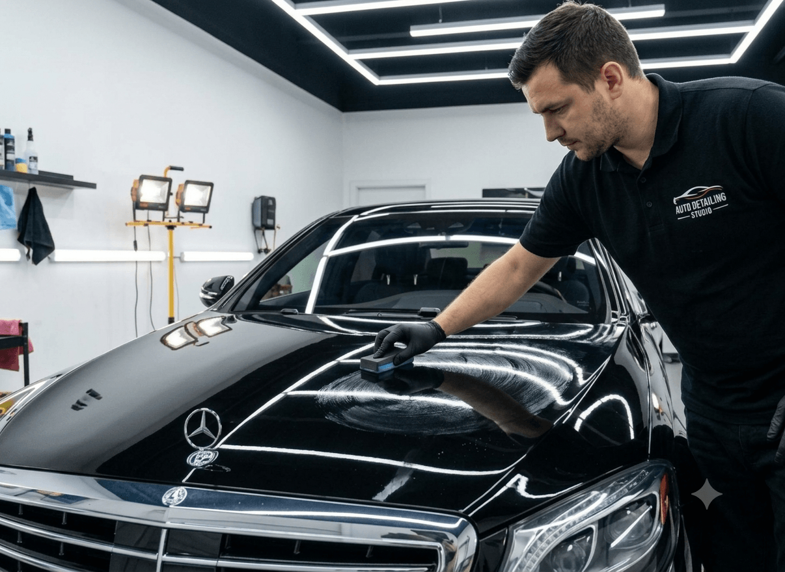
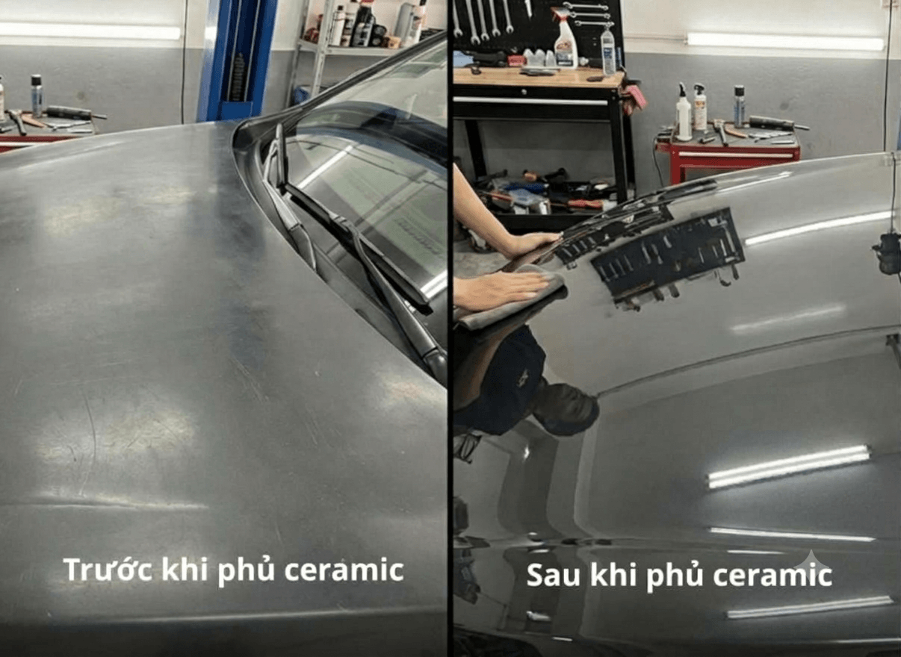

Phủ Ceramic Ô Tô Mới Nhất – Giải Pháp Bảo Vệ Sơn Xe Toàn Diện
Phủ ceramic ô tô là giải pháp giúp bảo vệ lớp sơn xe,
tăng độ bóng và hỗ trợ hạn chế các tác động từ môi trường.

Phủ ceramic ô tô là gì?
Phủ ceramic là phương pháp phủ một lớp bảo vệ lên bề mặt sơn xe,
giúp tăng độ bóng, hỗ trợ chống bám nước và giúp việc vệ sinh
xe thuận tiện hơn.
Lớp ceramic có khả năng:
- Chống trầy xước nhẹ
- Chống bám nước, bám bụi
- Hạn chế tia UV gây phai màu sơn
- Tăng độ bóng và chiều sâu màu sơn
- Dễ vệ sinh, rửa xe nhanh hơn

Báo giá phủ ceramic ô tô mới nhất
Chi phí phủ ceramic phụ thuộc vào kích thước xe, tình trạng
bề mặt sơn, loại dung dịch ceramic và số lớp phủ.
Lợi ích khi phủ ceramic ô tô
- Tăng độ bóng cho bề mặt sơn.
- Hỗ trợ hạn chế bám nước và bụi bẩn.
- Giúp vệ sinh xe dễ dàng hơn.
- Hỗ trợ bảo vệ lớp sơn trước các tác động môi trường.
Quy trình phủ ceramic ô tô
- Rửa xe và làm sạch bề mặt.
- Kiểm tra, xử lý các khuyết điểm trên sơn.
- Thi công dung dịch ceramic.
- Kiểm tra độ phủ và hoàn thiện bề mặt.
Kết luận
Để lựa chọn gói phủ ceramic phù hợp, bạn nên tham khảo tình trạng
xe và yêu cầu báo giá cụ thể từ đơn vị thi công.